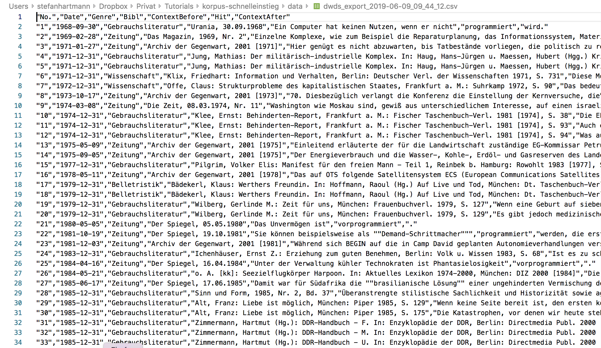

Von der Fragestellung zum Korpus
Legen wir also los! Doch das können wir nicht, ohne uns zuvor einen Plan zurechtzulegen.

Das ist für das empirische Arbeiten einfacher als es vielleicht scheint, denn die meisten empirischen Studien lassen sich auf folgende drei Schritte herunterbrechen:

eine Fragestellung formulieren,

Daten erheben,

Daten auswerten.
In diesem Teil geht es zunächst um die ersten beiden Schritte.
Eine Fragestellung formulieren
Der erste Schritt ist wahrscheinlich der wichtigste. Nur wenn Sie eine gute Forschungsfrage haben, können Sie eine aussagekräftige empirische Analyse durchführen. Aus der Forschungsfrage ergibt sich die Methode: Für manche Fragestellungen bietet sich z.B. eine Fragebogenstudie an, für andere eine psycho- oder neurolinguistische Herangehensweise, für wieder andere eine Korpusrecherche.

Das heißt auch: Wenn Sie eine Korpusanalyse durchführen möchten, brauchen Sie eine Fragestellung, die korpuslinguistisch operationalisierbar ist. Beispielsweise lässt sich eine Frage wie “Welche Gehirnareale werden beim Hören von Bewegungsverben aktiviert?” natürlich nicht mit Hilfe von Korpusdaten beantworten.
Da sich die Frage nach der Operationalisierbarkeit am besten an einem Beispiel nachvollziehen lässt, spielen wir sie einmal für ein konkretes sprachliches Phänomen durch.
Für unsere Beispielanalyse werfen wir einen Blick auf die prädikative Verwendung der Partizipien programmiert und vorprogrammiert.

Letzteres ist manchen Sprachpfleger*innen ein Dorn im Auge: So bezeichnet es Bastian Sick als “umgangssprachliches Blähwort, über das schon Heerscharen von Sprachpflegern hergefallen sind – vergebens, denn es wird immer munter weiter vorprogrammiert. Dabei wissen nicht nur Programmierer: Man programmiert immer im Voraus, die Vorsilbe vor- ist daher pleonastisch, zu Deutsch: doppelt gemoppelt.”

Was Sprachpfleger*innen wie Sick jedoch oft verkennen, ist, dass Sprache nicht immer “logisch” ist. Vielmehr suchen sich Wörter oft eigene Nischen. Beispielsweise ist der Bürostuhl, auf dem Sie vielleicht gerade sitzen, kein Rollstuhl, obwohl er Rollen hat – denn das Wort Rollstuhl hat eine eigene Bedeutung angenommen, die sich nicht kompositionell aus den Einzelteilen des Wortes zusammensetzt. Im Falle von vorprogrammiert hingegen passt zwar die von Sick erwähnte Paraphrase ‘im Voraus programmiert’. Aber trotzdem wäre denkbar, dass das Wort eine semantische Spezialisierung erfahren hat: Wird programmiert möglicherweise eher dann verwendet,wenn ein Computer-Programmiervorgang im wörtlichen Sinn gemeint ist, und vorprogrammiert eher im metaphorischen Sinn, wenn z.B. ein Skandal oder eine Katastrophe “vorprogrammiert” ist? Das ist die Fragestellung, der wir jetzt weiter nachgehen möchten. Aber zunächst halten wir noch einmal fest: Der wichtigste Schritt ist, eine gute Forschungsfrage zu formulieren. Aus dieser ergeben sich dann die empirische Methode und das weitere Vorgehen. Das wollen wir nun einmal kurz üben.
Bitte ordnen Sie die Forschungsfragen den empirischen Methoden zu, die zur Beantwortung der Fragestellung weiterhelfen können.
-
Welche Faktoren beeinflussen die Studienwahl? -
In welcher Form werden mutmaßliche Täter in der öffentlichen Berichterstattung zu Plagiatsvorwürfen dargestellt?
All Answers Answered
Answers Remain
Ein Korpus finden oder erstellen
Wenn Ihre Fragestellung steht, brauchen Sie ein geeignetes Korpus, um sie bearbeiten zu können. Dabei haben Sie grundsätzlich zwei Möglichkeiten:
- ein eigenes Korpus erstellen,
- mit einem existierenden Korpus arbeiten.
Im Folgenden werden wir uns auf die letztgenannte Möglichkeit konzentrieren. Prinzipiell gilt: Ein eigenes Korpus sollten Sie nur dann erstellen, wenn kein existierendes Korpus für Ihre Fragestellung geeignet ist. Das ist zum Beispiel dann der Fall, wenn Sie eine bestimmte Textsorte erforschen wollen, zu der es noch kein Korpus gibt. Bei vielen Nischenthemen ist das der Fall. Wenn sie also beispielsweise eine Arbeit über nationalistische Nagelpflegeblogs oder Selbsthilfeforen karamellsüchtiger Kanarienvogelzüchter schreiben möchten, werden Sie kaum umhinkommen, ein eigenes Korpus zu erstellen. Hierfür gibt es glücklicherweise an anderer Stelle sehr hilfreiche Tutorials, etwa von Noah Bubenhofer oder Simon Meier-Vieracker. Auch gibt es hilfreiche Tools, mit denen man Sammlungen von Textdokumenten relativ einfach durchsuchen kann, ohne sich vertiefte computerlinguistische Kenntnisse aneignen zu müssen, etwa AntConc von Laurence Anthony (für alle Betriebssysteme) oder der Corpus Explorer von Jan Oliver Rüdiger (für Windows).
Vom Korpus zur Konkordanz: Daten erheben
Suchsyntax
Für die Datenerhebung verwenden wir das DWDS-Kernkorpus des 20. Jahrhunderts, das über dwds.de zugänglich ist. Wir suchen auf der Wortebene mit Hilfe von regulären Ausdrücken nach den Formen programmiert und vorprogrammiert. Dafür benutzen wir den Suchstring
@programmiert || @vorprogrammiert
Das @-Zeichen bedeutet, dass wir genau diese Strings suchen und keine anderen Wortformen wie programmierte, programmiertes etc. Da uns nur die prädikative Verwendung interessiert, brauchen wir die flektierten Wortformen nicht. Der horizontale Strich | ist der ODER-Operator; dass man ihn hier doppelt setzen muss, ist eine Besonderheit der DWDS-Suchsyntax.
Wenn Sie im DWDS eigene Suchanfragen stellen wollen, werden Sie nicht umhinkommen, sich zumindest ansatzweise mit der DWDS-Suchsyntax vertraut zu machen. Einen wichtigen Anlaufpunkt hierfür kann die Dokumentation auf den Seiten des DWDS bilden.
Export
Die Suche liefert uns 88 Treffer, die nun im Browser in ihrem jeweiligen Kontext dargestellt werden. Diese Daten wollen wir nun exportieren, und zwar im “Key Word in Context” (KWIC)-Format. Damit ist gemeint, dass der Suchtreffer zusammen mit seinem unmittelbaren Kontext dargestellt wird. Erfreulicherweise bietet das DWDS eine sehr gute Exportfunktion, die es erlaubt, Daten im CSV-Format zu speichern.
Eine solche Sammlung von Korpusbelegen, wie wir sie jetzt exportiert haben, nennt man in der Korpuslinguistik Konkordanz. Der Formatname “CSV” steht für “Comma-Separated Values”. Das heißt, in der Datei sind die einzelnen Werte durch Kommata voneinander abgetrennt. In einem Texteditor sieht das Ganze so aus wie in 2.2. Wie Sie sehen, enthält die Datei neben den Korpusbelegen selbst auch Metadaten zu den einzelnen Belegen, z.B. zu Autor*in, Titel etc.
Damit können wir zunächst noch wenig anfangen: Wir wollen die Konkordanz in ein Tabellenkalkulationsprogramm einlesen.
Import in ein Tabellenkalkulationsprogramm
Wenn Sie Microsoft Excel auf Ihrem Rechner installiert haben, sind die Default-Einstellungen höchstwahrscheinlich so gesetzt, dass CSV-Dateien in Excel geöffnet werden, wenn Sie darauf doppelklicken. Warum das keine gute Idee ist, zeigt der folgende Screenshot (rote Hervorhebungen von mir nachträglich hinzugefügt).

Hier sind einige Sonderzeichen verloren gegangen, weil Excel die Kodierung der Datei nicht richtig erkannt hat. Es gibt mehrere Wege, diesem Problem zu begegnen. Wir sehen uns nun zwei an, je nachdem, welches Tabellenkalkulationsprogramm Sie installiert haben: einen Weg für Excel und einen für die freie Alternative Calc. Näheres zum Datenimport finden Sie auch im Tutorial zur Datenaufbereitung.
Import in Excel
- Öffnen Sie die Datei in einem Texteditor. Für Windows empfiehlt sich Notepad++, für Mac die kostenlose (und für unsere Zwecke völlig ausreichende) Version von BBEdit, für Linux gibt es z.B. Notepadqq.
- Markieren Sie mit Strg+A bzw. Cmd+A den gesamten Text.
- Öffnen Sie ein leeres Tabellenblatt in Excel. Die nächsten Schritte, 4 bis 7, sind in 2.4 visualisiert.
- In den meisten Fällen sollten Sie nun einfach mit Strg+V bzw. Cmd+V die Daten einfügen können. In manchen Fällen müssen Sie jedoch, wie im Screencast 2.4, die Option “Paste Special” verwenden (dt. “Inhalte einfügen”) und angeben, dass Sie den Unicode-Text einfügen möchten.
- Mit Klick auf das kleine Klemmbrett-Symbol gelangen Sie zum Textimport-Assistenten. Hier müssen Sie Excel sagen, wie der eingefügte Text strukturiert ist. Auf der ersten Seite sagen Sie, dass es sich um einen Text handelt, bei dem die einzelnen Spalten durch ein Trennzeichen getrennt sind (“Delimited”) – diese Option ist in der Regel schon angewählt. Außerdem teilen Sie Excel hier mit, dass der eingefügte Text UTF-8-formatiert ist.
- Auf der nächste Seite des Textimport-Assistenten geben Sie an, dass Kommata als Spaltentrenner benutzt werden. Bei den Textqualifizierern müssen Sie nichts ändern, da hier schon Anführungszeichen ausgewählt sind: Wie Sie in 2.2 sehen können, werden Anführungszeichen in der CSV-Datei genutzt, um zusammengehörigen Text zusammenzuhalten (denn wären sie nicht da, würde Excel jedes Komma im Text für einen Spaltentrenner halten)
- Dieser letzte Schritt erübrigt sich meistens, kann aber nicht schaden: Zuletzt können Sie noch alle Spalten als “Text” formatieren. (Die Datumsspalte können Sie prinzipiell auch als “Datum” formatieren, falls Sie ausschließlich in Excel weiterarbeiten, aber tendenziell ist davon abzuraten – gerade bei einer späteren Konversion in andere Dateiformate kann dabei alles mögliche schiefgehen.) Tipp: Um alle Spalten auf einmal als “Text” zu formatieren, scrollen Sie einfach im Fenster ganz nach rechts und klicken mit gedrückter Shift-Taste auf die letzte Spalte, dann sind alle Spalten markiert.
Import in Calc
Öffnet man die Datei im kostenlosen Tabellenkalkulationsprogramm Calc von LibreOffice (mit Rechtsklick > Öffen mit), so öffnet sich zunächst automatisch der Textimportassistent. Hier muss man Calc mitteilen, welches Format die Datei hat. In unserem Fall ist der Text UTF-8-kodiert, wir haben Kommata als Spaltentrenner und Anführungszeichen als Textqualifizierer.
Zurück Hauptseite Weiter